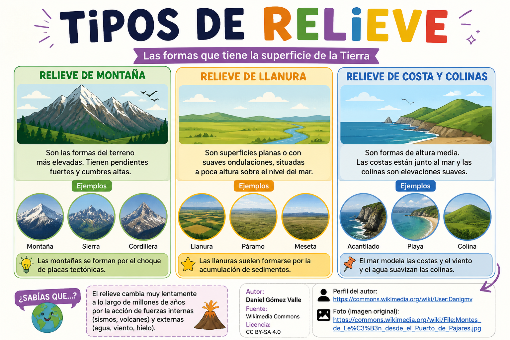

Actividad 1
Empezamos con una primera toma de contacto con los distintos tipos de relieve. A través de imágenes, descubriremos sus formas y características principales, como montañas, llanuras, valles o mesetas. Compartiremos ideas y primeras impresiones en una lluvia de ideas inicial. ¡Vamos a explorar el paisaje!
Actividad 2 y 3
Vamos a descubrir y comprender los distintos tipos de relieve. Aprenderemos a reconocer sus características principales, como montañas, llanuras, valles o mesetas, y veremos ejemplos reales. Además, realizaremos una búsqueda de información para ampliar lo que sabemos y construir entre todos un aprendizaje más completo. ¡Vamos a investigar y convertirnos en exploradores del relieve!

Actividad 4
Ya estamos preparados para analizar un paisaje y descubrir todo lo que nos puede contar. Para ello, seguiremos unos pasos sencillos que nos ayudarán a observarlo de forma ordenada y completa: primero identificaremos el tipo de relieve, después nos fijaremos en el clima y la vegetación, y por último analizaremos la presencia de agua y la acción de las personas sobre el entorno. ¡Vamos a convertirnos en auténticos exploradores del paisaje!